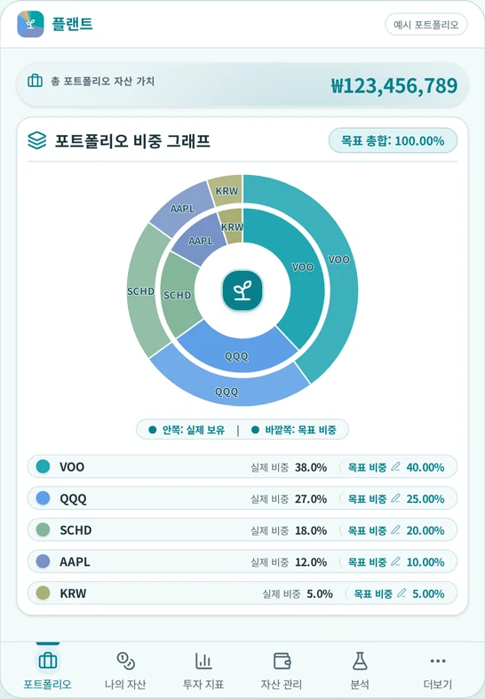
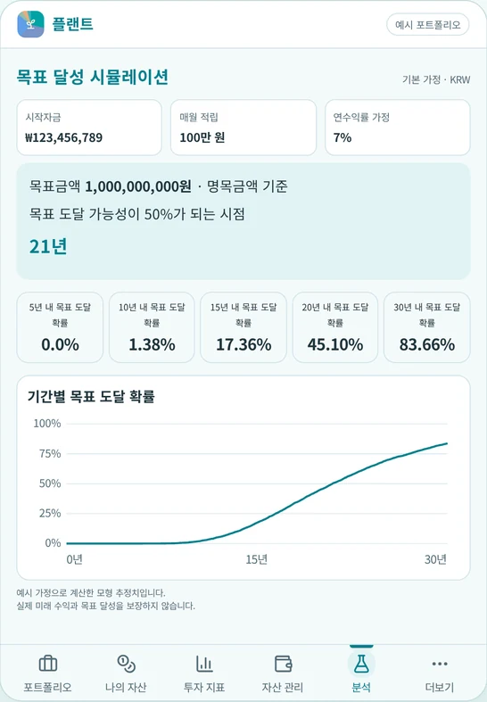

첫 번째 도구 · 01
플랜트PLANT
흔들릴수록 깊어지는 자산
장기 투자자를 위한 주식 포트폴리오 관리·분석 도구입니다.
보유 자산과 목표 비중을 관리하고, 리밸런싱과 백테스트, 리스크 분석, 목표 달성 시뮬레이션을 통해 자신의 투자를 조금 더 차분하고 구조적으로 바라볼 수 있도록 돕습니다.
Google Play 출시 예정


NEURIT LAB · 느릿연구소
유행을 좇기보다, 시간이 지나도 유용한 도구를 만듭니다.
작지만 오래 곁에 둘 수 있는 소프트웨어를 고민합니다.
OUR WORK
오래 쓸수록, 나에게 익숙해지는 도구.
첫 번째 도구 · 01
흔들릴수록 깊어지는 자산
장기 투자자를 위한 주식 포트폴리오 관리·분석 도구입니다.
보유 자산과 목표 비중을 관리하고, 리밸런싱과 백테스트, 리스크 분석, 목표 달성 시뮬레이션을 통해 자신의 투자를 조금 더 차분하고 구조적으로 바라볼 수 있도록 돕습니다.
Google Play 출시 예정


OUR THOUGHT
오래 남는 쓸모에 대하여
세상은 계속 빨라지고 있습니다.
새로운 것은 매일 나타나고,
금세 또 다른 것으로 바뀝니다.
느릿연구소는 그 속도와 경쟁하기보다
시간이 지나도 여전히 쓸모 있는 것이 무엇인지 고민합니다.
화려하지 않아도 편안한 것.
처음보다 시간이 지날수록 더 좋아지는 것.
잠시 쓰고 버리는 것이 아니라 오래 곁에 둘 수 있는 것.
그런 소프트웨어를 만들고 싶습니다.
STAY IN TOUCH
느릿연구소에 전하고 싶은 이야기가 있다면
contact@neuritlab.com